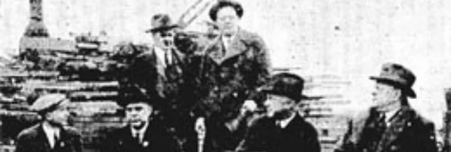

History

How It Began
On February 6, 1898, six of Seattle's most prominent theater owners gathered to discuss how to handle an ongoing musicians' strike. John Cort, brothers John W. and Thomas J. Considine, H.L. Leavitt, Mose Goldsmith, and Arthur G. Williams headed to the Moran Brothers' shipyard on South Charles Street to make a plan. According to most popular accounts, after deciding to work together to settle the strike by using piano players to replace the musicians, the men began to discuss life. At that moment, the Order of Good Things was born.
As their numbers grew, the Order chose the bald eagle as its official emblem and changed the name of the organization to The Fraternal Order of Eagles, with a goal to "make human life more desirable by lessening its ills and promoting peace, prosperity, gladness and hope."
Touring theater troupes are credited with much of the Eagles' early growth. Many early members were actors, stagehands, and playwrights who carried the Eagles story from town to town as they traveled throughout the United States and Canada. The group's early motto, "Skin'em," became the secret password used to identify members, while the official motto became "Liberty, Truth, Justice and Equality."
Within 10 years of its inception, the organization included more than 1,800 Aeries across the United States, Canada, and Mexico, with membership exceeding 350,000. Members received free medical attention for themselves and their families, weekly payments in case of sickness, and a funeral benefit, all valuable services before widespread access to medical, disability, and life insurance.
The organization quickly became a leader in influencing national issues, helping create Mother's Day and later supporting Social Security, Medicare, and more. The Eagles' growing membership included many prominent local figures and held a position of influence in communities everywhere.
The Birth Of An Auxiliary
For years, women accompanied male members of the Order to social events. As early as 1914, women were in attendance for the organization's Grand Aerie Convention, eventually inspiring the creation of their own wing of the Eagles, the Ladies' Auxiliary.
Pressure increased to formally recognize the Auxiliary, and in January 1926, sitting Grand Worthy President Charles C. Guenther issued an official circular explaining that the time had come for definite action regarding its formal creation.
When the Eagles assembled for the 28th annual Grand Aerie Convention in August 1926, delegates formally approved the formation of the Ladies' Auxiliary. On August 14, 1952, Past Grand Worthy President Lester Loble of Montana served as the instituting deputy for the Grand Auxiliary. Because Alta Browning Smith was a primary contributor in organizing and instituting the Grand Auxiliary, she was appointed the first Grand Madam President.
Making A Difference
Since the beginning, the F.O.E. has maintained a strong dedication to giving back to the communities housing its Aeries and Auxiliaries. In 1954, nearly 10,000 Ten Commandments plaques were distributed by the Order, promoting its foundation of faith and encouraging citizens to use the Commandments as a guideline for treating others and building stronger communities.
Eagles continued their commitment to helping their own through the Memorial Foundation, which was designed to provide aid to the children of members who lost their lives in World War II. In 1967, the Jimmy Durante Children's Fund was established, providing financial aid to institutions helping youth through medical research and prevention programs.
The Charity Foundation continued to grow, establishing separate funds for a variety of causes as they became more prominent, ensuring brothers and sisters facing illness could have hope for care and a cure.
In 1985, through a strong relationship with member and entertainer Danny Thomas, the Eagles became the first organization to top $1 million in donations to St. Jude Children's Research Hospital.
The Eagles took on their biggest fundraising challenge in 2008, committing $25 million to the University of Iowa to fund The Fraternal Order of Eagles Diabetes Research Center. The center opened in August 2014 inside the John and Mary Pappajohn Biomedical Discovery Building in Iowa City, Iowa, and hosts a team of more than 100 researchers working on ways to prevent, treat, and ultimately cure diabetes.